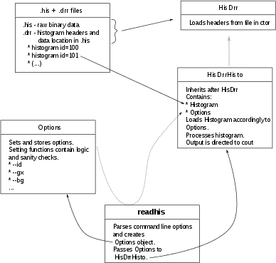

The purpose of this program is to load histogram data from HIS/DRR file format (upak library), and convert them to ascii format. Program parses options given by user (Options class) and creates HisDrrHisto class which loads the data and puts them into cout.
Output contains data and calculated uncertainties. The comment lines in the output is marked by '#' character. These data come in plain text format, so it should be easy to plot them directly (I recommend gnuplot, which also uses '#' as comment characters) or import them into spreadsheet using LibreOffice Calc or similar.
Installation
The provided makefile should compile code and create 'readhis' executable. To run it simple type 'make'. Compilation was tested on Linux Fedora 16 and Arch Linux using g++ 4.6. Program depends on C++ Standard Library only, so porting to other operating systems should be easy.
Usage
readhis [options] file.his
Description
Program reads his file using binary description from drr file. Both files are required to be present in the specified path and with the same base name (e.g. t1.his and t1.drr). Result is send to standard output, use redirection in case you want to save it to file.
Options
- --id : short (-i), selects histogram id required by other options unless stated otherwise.
- --gx x0,x1 : short (-x), 2D histograms only, requires two integer arguments separated by coma. Sets projection on X axis, starting from column x0 to x1 (including both)
- --gy x0,x1 : short (-y), as above, projection on Y axis
- --bg x0,x1 : short (-b), 2D histograms only, only with gx or gy option. Sets gate for background subtraction, from x0 to x1 (including both).
- --sbg x0,x1,x2,x3 : short (-s), 2D histograms only, only with gx or gy option. Same as above exept that gate is split into two parts x0 to x1 and x2 to x3.
- --bin bx[,by] : short (-B), defines number of histogram bins to join. For 2D histogram if only one argument is given by=bx is assumed. At least one bin size must be > 1.
- --zero : short (-z), suppresses bins with zero counts in output
- --info : short (-I), displays detailed information on histogram
- --list : short (-l), does not requires id. Displays list of histograms present in the file.
- --List : short (-L), does not requires id. As above, additionally marks empty histograms and histogram dimensions.
Examples
Let's suppose that we have data in run01.his and run01.drr files. The readhis and data are in the same directory. The following examples follow logic of examining the data.
- Display list of all histograms $ readhis --list run01.his
- Display list of all histograms, for each show number of dimensions and mark which are empty $ readhis --List run01.his
- Display detailed information about histogram 1501 $ readhis --id 1501 --info run01.his
- Extract data for histogram 1501 into text file 1501.txt $ readhis --id 1501 run01.his > 1501.txt
- As above but bin data, with bin size 3 $ readhis --id 1501 --bin 3 run01.his > 1501.txt
- Display detailed information about 2 dimensional histogram 1734 $ readhis --id 1734 --info run01.his
- Extract data for histogram 1734 into text file 1734.txt $ readhis --id 1734 run01.his > 1734.txt
- As above but request bin size in X axis 1, and bin size Y - 10 $ readhis --id 1734 --bin 1,10 run01.his > 1734.txt
- Put gate on X axis (makes projection on Y axis) between channels 266 and 269 in histogram 1734. Put result into gate.txt text file. $ readhis -- id 1734 --gx 266,269 run01.his > gate.txt
- As above but set gate for background removal between channels 272 and 275. $ readhis --id 1734 --gx 266,269 --bg 272,275 run01.his > gate.txt
- As above but set background gate split into two parts (e.g on both sides of the peak) between channels 262 to 263 and 266 to 267 $ readhis --id 1734 --gx 266,269 --sbg 262,263,266,267 run01.his > gate.txt
- Put gate on Y axis (makes projection on X axis) between channels 100 and 150. Put result on screen. $ readhis --id 1734 --gy 100,150 run01.his
- List all histograms in file run02.his and run02.drr, being placed in a different directory (e.g relative path is ../RUN02/) $ readhis --list ../RUN02/run02.his
Graph
This graph explains the logic of program

Copyrights
This program is free software: you can redistribute it and/or modify it under the terms of the GNU General Public License as published by the Free Software Foundation, either version 3 of the License, or (at your option) any later version.
This program is distributed in the hope that it will be useful, but WITHOUT ANY WARRANTY; without even the implied warranty of MERCHANTABILITY or FITNESS FOR A PARTICULAR PURPOSE. See the GNU General Public License for more details.
You should have received a copy of the GNU General Public License along with this program. If not, see <http://www.gnu.org/licenses/>.
 1.7.6.1
1.7.6.1